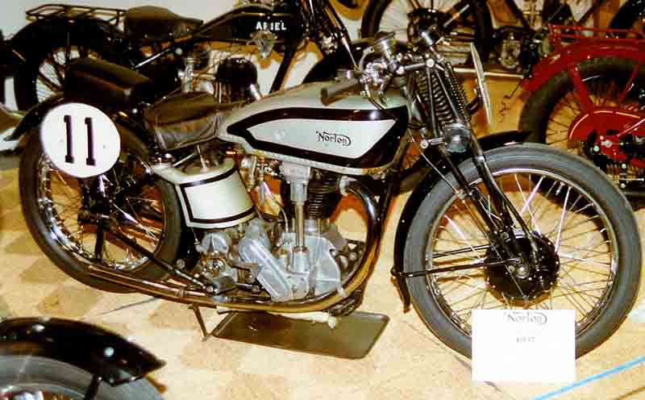
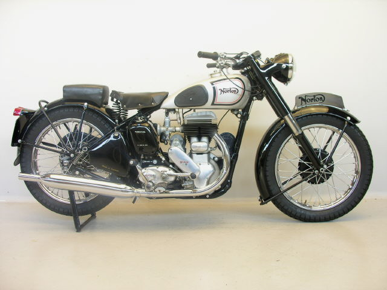
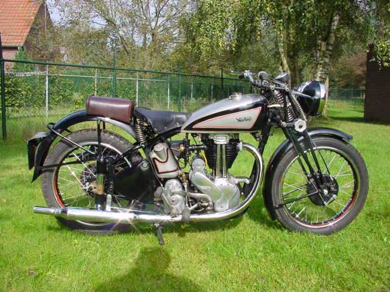

(buvusi „Norton Motors, Ltd.“) yra angliškas motociklų prekės ženklas, kilęs iš Birmingamo, Anglijos, JK. Jį valdo Indijos motociklų prekės ženklas „TVS Motor Company“. Jis buvo įkurtas 1898 m. Kaip „dviračių prekybai reikalingų detalių ir dalių“ gamintojas. Iki 1902 m. Įmonė pradėjo gaminti motociklus su įmontuotais varikliais. 1908 m. Į asortimentą buvo įtrauktas Norton pagamintas variklis. Tai pradėjo ilgą vieno ir galiausiai dviejų cilindrų motociklų gamybos seriją ir ilgą lenktynių istoriją. Per Antrąjį pasaulinį karą „Norton“ pagamino beveik 100 000 karinių „Model 16 H“ ir „Big 4“ šoninių vožtuvų motociklų. Kai pagrindiniai akcininkai 1953 m. Pradėjo palikti „Norton“, bendrovė atsisakė akcijų ir įsigijo „Associated Motor Cycles“. Nors motociklų pardavimai šeštajame dešimtmetyje išgyveno nuosmukį, o „Norton Motors Ltd“ buvo tik mažas gamintojas, „Norton“ pardavimai klestėjo. „Norton Dominator Twins“ serija - 500, po to 600, tada 650 ir 750, o po to - 750 colių. „Norton Atlas“ pardavimai augo, ypač parduodant JAV.


